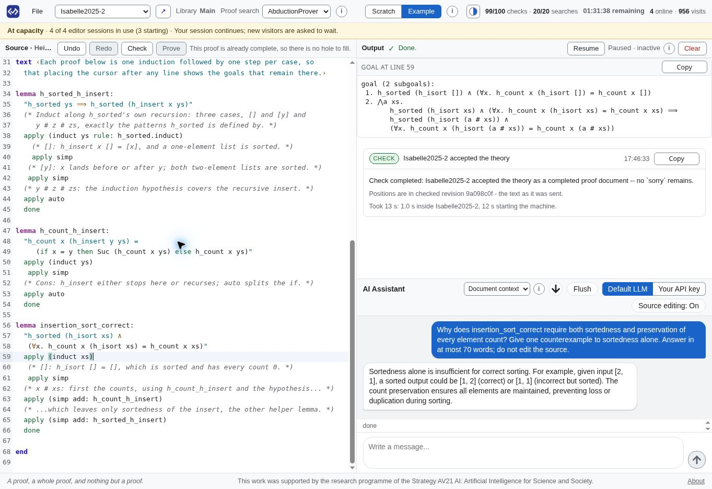

Integrates Lean 4 as one of five browser-hosted proof assistants, with worked Lean examples and Aesop, grind, and portfolio proof search.
Abstract
Recent advances in AI-assisted proof automation are extending the use of proof assistants in software verification and mathematics. However, greater proof automation does not remove users' responsibility to assess whether formal statements capture their intended requirements, making education in formal specification and reasoning essential. To lower the installation and learning barriers associated with mature proof assistants, we present ProofStudio, a browser-based environment integrating Isabelle/HOL, Lean, Rocq, HOL4, and HOL Light with corresponding worked examples, preconfigured proof search, and contextual AI assistance. With ProofStudio, users can explore formal specifications and proofs across five systems without local installation, inspecting native prover feedback and experimenting with automation through a common interface.
Problem
Installing and configuring mature proof assistants is a barrier for newcomers and for experienced users who want to try other systems. Running untrusted proof documents locally also carries security risks. Users still need to learn to read and validate formal specifications, even as AI automation grows.
Approach
ProofStudio is a browser-based environment that integrates Isabelle/HOL, Lean 4, Rocq, HOL4, and HOL Light. It offers Source, Output, and AI Assistant panes, persistent prover sessions that give caret-based goal feedback, and preconfigured proof search (Aesop, grind, and a portfolio for Lean). Each prover runs in a QEMU/KVM virtual machine with no network interface, and submitted commands and imports are screened. Ten corresponding examples, such as insertion sort, binary search trees, and leftist heaps, are provided for each prover.

Fig. 1: ProofStudio with the Isabelle insertion-sort example: ① prover and example selection; ② the Source pane; ③ the Output pane, showing intermediate subgoals and a successful whole-document check; ④ the AI Assistant pane, explaining why correctness requires both sortedness and count preservation. Public-service capture, 21 October 2026.
Results
A public service at proofstudio.org provides the five provers with ten example scripts each. Only informal early use is reported, including a doctoral student learning Lean, and a classroom evaluation study is proposed. Current scope is limited to single-document developments with core libraries.